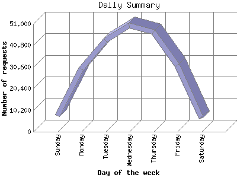

The Daily Summary identifies the level of activity as a total for each day of the week. This summary also compares the level of activity on weekdays and weekends as a total for the report time frame.

| Day of the week | Number of requests | Number of page requests | |
|---|---|---|---|
| 1. | Sunday | 7,474 | 2,182 |
| 2. | Monday | 29,754 | 4,867 |
| 3. | Tuesday | 43,193 | 6,921 |
| 4. | Wednesday | 50,096 | 7,472 |
| 5. | Thursday | 46,981 | 7,294 |
| 6. | Friday | 31,312 | 5,122 |
| 7. | Saturday | 6,515 | 2,049 |
| Total Weekdays | 201,336 | 31,676 | |
| Total Weekend | 13,989 | 4,231 | |
This report was generated on January 29, 2013 04:51.
Report time frame September 20, 2011 14:50 to January 27, 2013 13:05.
| Web statistics report produced by: analog 5.1 / Report Magic 2.21 |